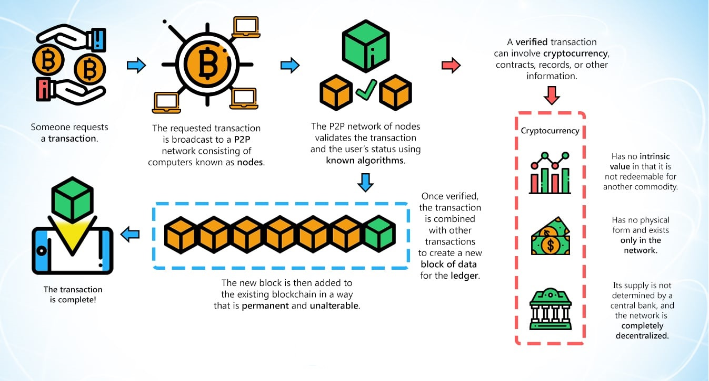
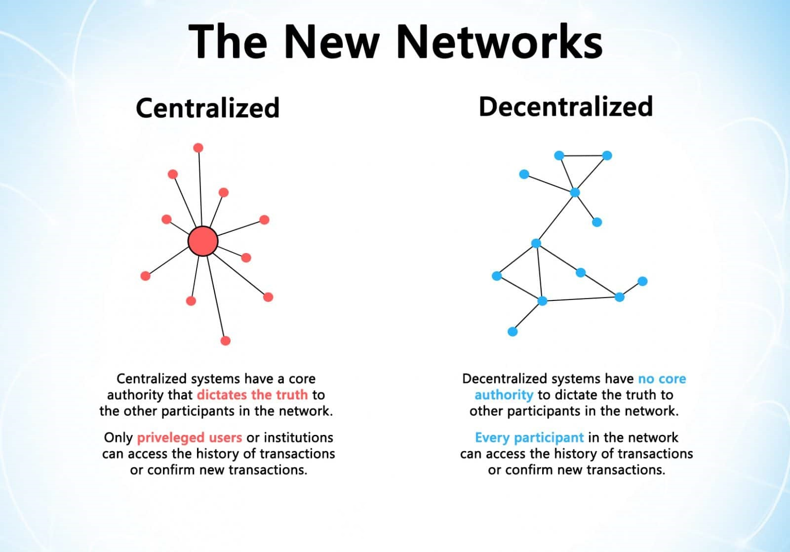
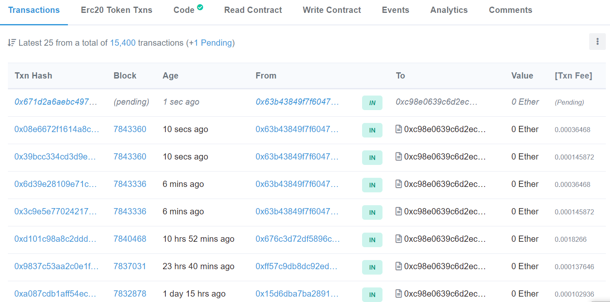
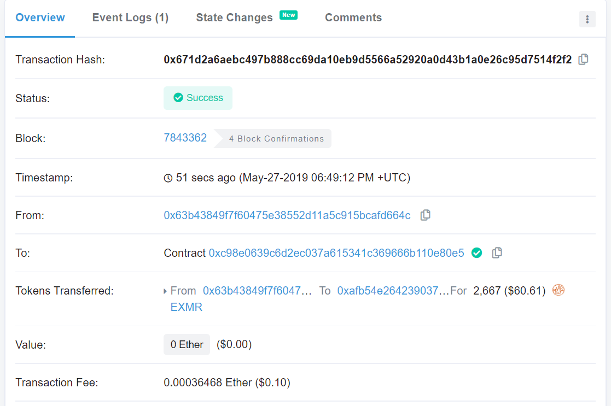
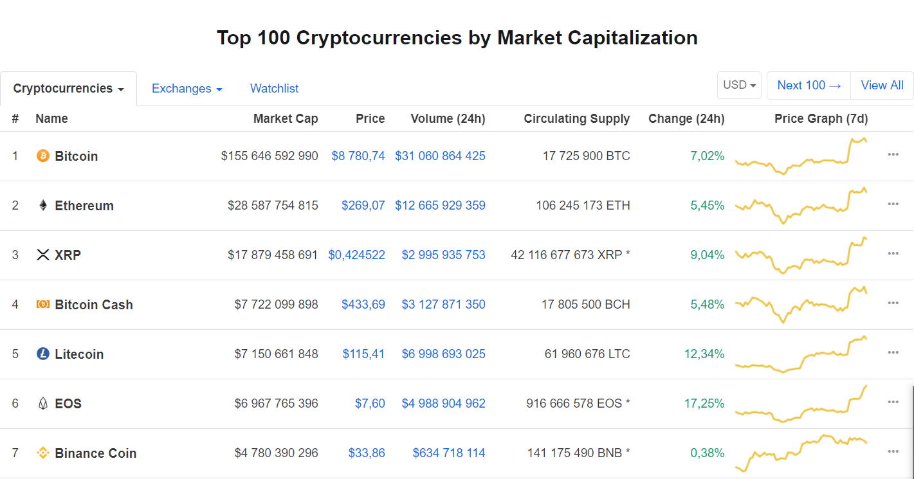
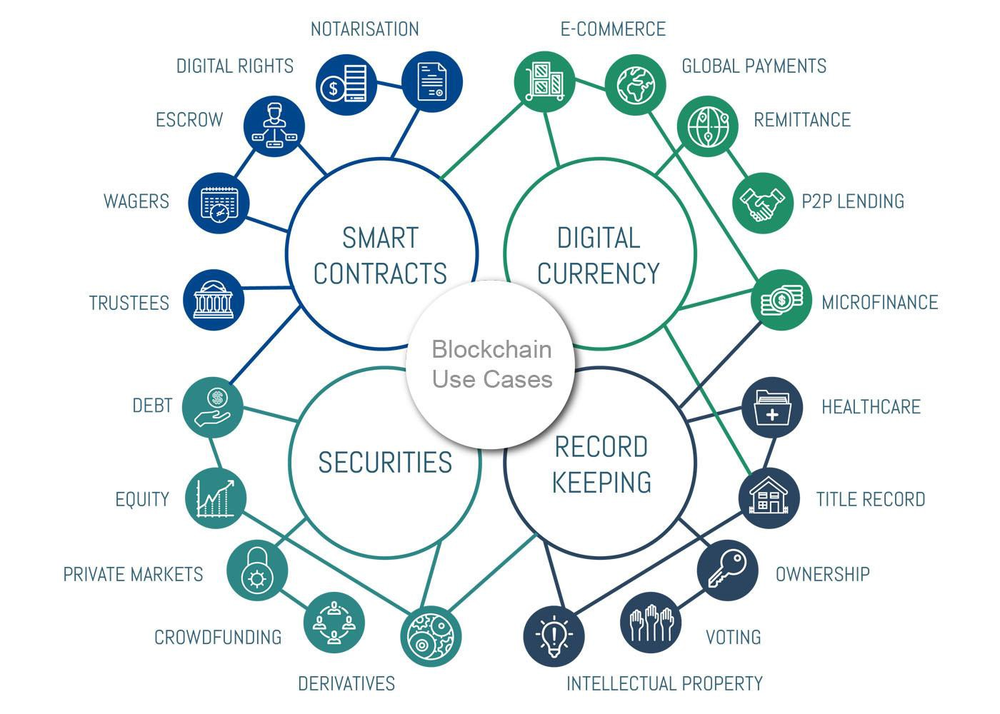

Blockchain
What is Blockchain?
Transaction cycle

The Pillars of Blockchain Technology
- Decentralization
- Transparency
- Immutability
Decentralization

Transparency

Immutability

Cryptocurrency

Where you can use blockchain?

Decree No. 8
“On the Development of Digital Economy”
Currency.com